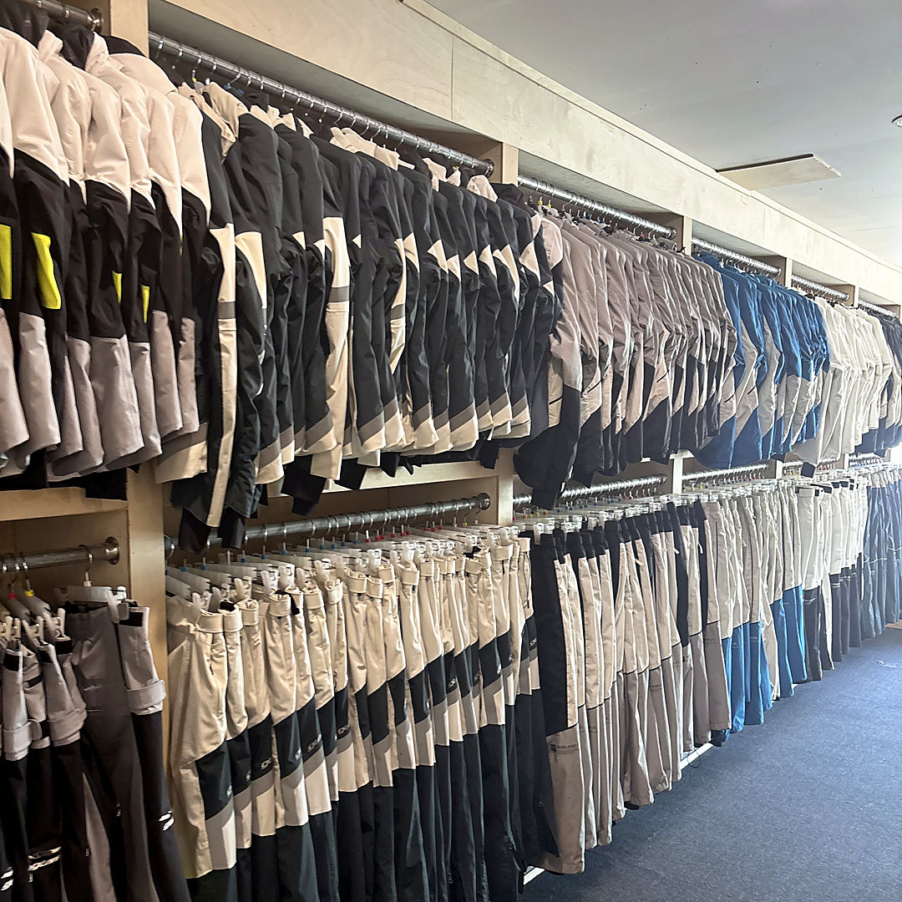
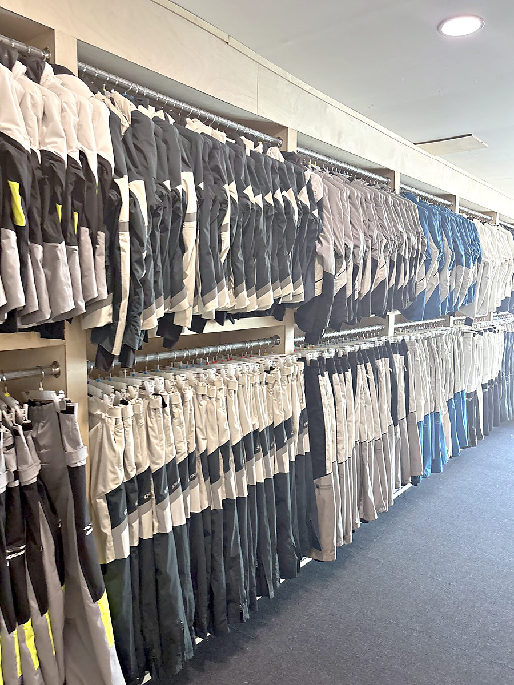
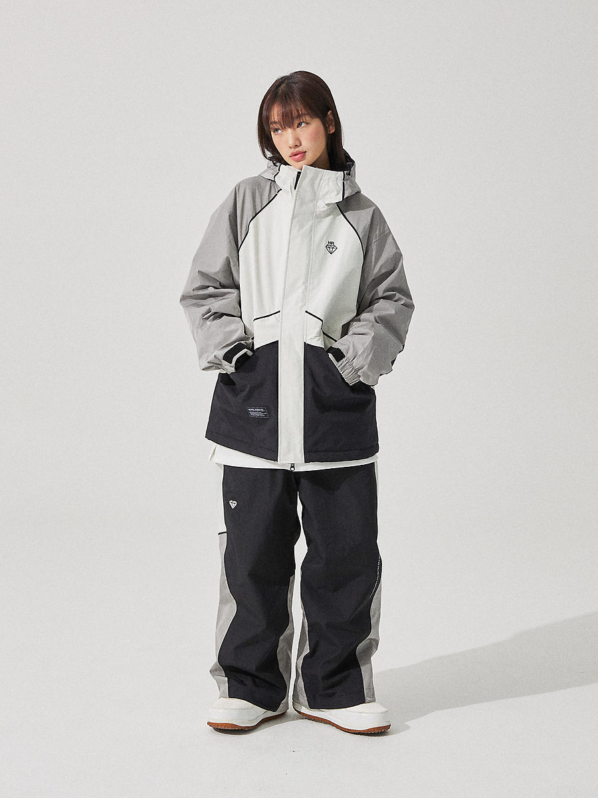
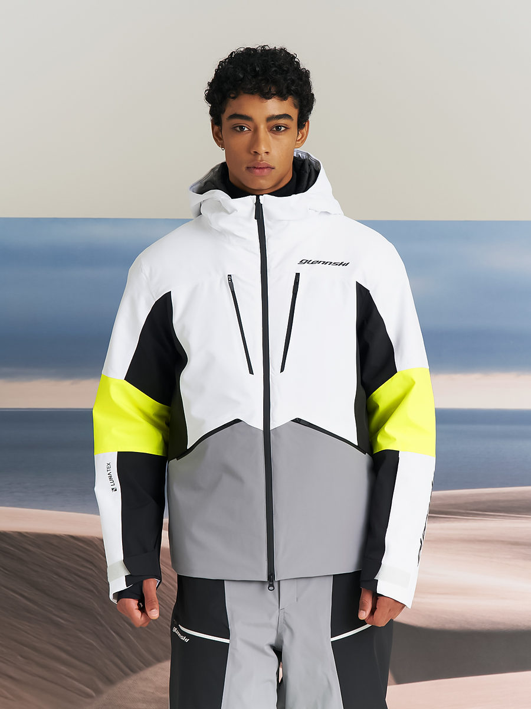
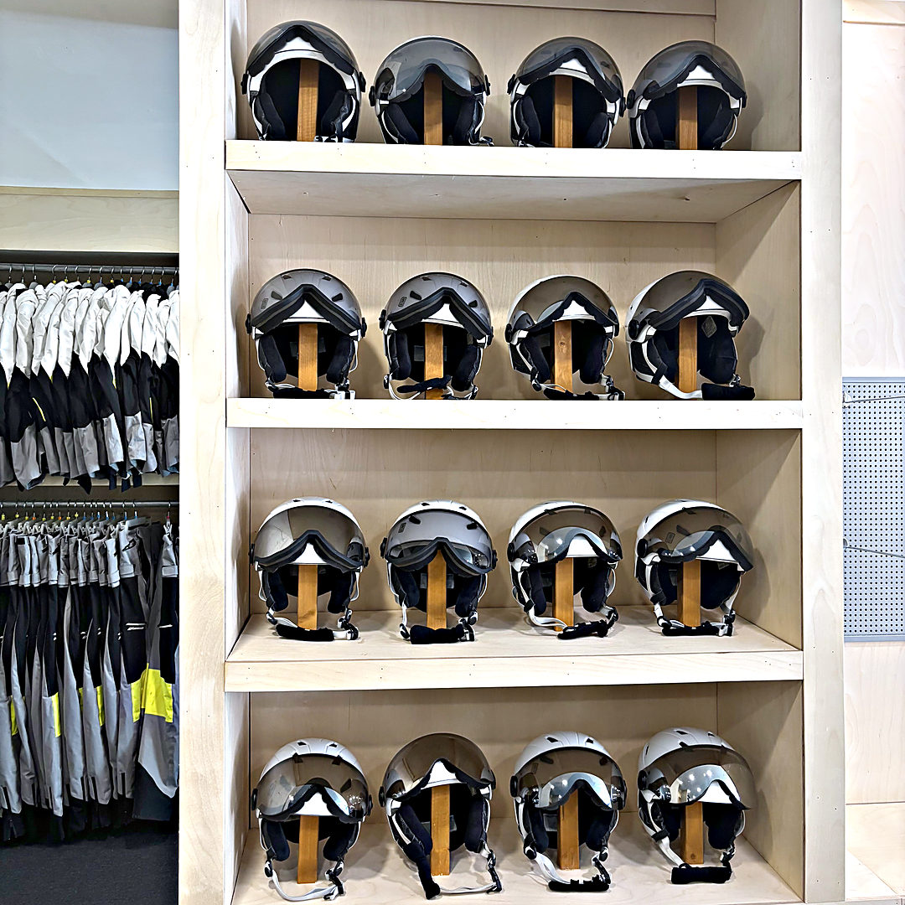

Rental Guide · 2026/27 시즌 기준
무주 스키장 렌탈샵 이용 방법

무주 스키장 렌탈샵을 이용할 때는 방문일과 인원을 정한 뒤 필요한 장비·의류를 선택해 예약하고, 매장에서 사이즈를 확인하면 됩니다. 무주놀러와스키샵은 홈페이지에서 방문 시간과 품목을 고르면 예상 금액이 바로 나오고, 예약금 50,000원을 보내면 예약이 확정됩니다.
- 풀세트40,000원
- 방문 시간07:30~23:00
- 예약금50,000원
- 숙소 할인 쿠폰주중 20%
무주놀러와스키샵&렌탈샵은 덕유산리조트 정문 앞에서 스키·보드 장비와 의류를 대여합니다. 예약 화면에서 방문 일시와 인원을 입력하면 필요한 품목을 고르고 예상 금액을 확인할 수 있습니다. 정문 앞에서 매장을 직접 운영하며 받는 문의를 바탕으로 이 안내를 정리했습니다.
무엇을 빌릴 수 있나요?
| 품목 | 현재 공개 가격 | 선택 기준 |
|---|---|---|
| 스키·보드 장비 | 15,000원 / 인 | 스키 또는 보드에 맞춰 선택 |
| 의류 | 15,000원 / 인 | 상·하의와 사이즈 확인 |
| 헬멧 | 10,000원 / 개 | 착용 후 사이즈 조정 |
| 고글 | 10,000원 / 개 | 헬멧과 함께 착용감 확인 |
| 헬멧 + 고글 | 15,000원 / 개 | 보호용품을 함께 선택 |
대여용 의류는 사장님이 직접 고른 26/27 시즌 신상으로 준비되어 있고, 예약 전 홈페이지 룩북에서 디자인을 미리 살펴볼 수 있습니다.
무주 스키장 렌탈샵은 어떻게 예약하나요?
- 1. 방문 일시를 정합니다.
방문 날짜와 도착 시간을 먼저 정하면 리프트권과 렌탈 품목을 함께 비교하기 쉽습니다. - 2. 인원과 품목을 선택합니다.
대인·소인 인원, 장비, 의류, 헬멧·고글 수량을 선택하면 예상 합계가 계산됩니다. - 3. 이름과 연락처를 남깁니다.
예약 확인과 방문 관련 연락을 위해 예약자 정보와 요청사항을 입력합니다. - 4. 예약금을 보냅니다.
안내받은 계좌로 예약금 50,000원을 보내면 매장에서 입금을 확인한 뒤 예약이 확정됩니다. - 5. 방문해서 사이즈를 맞춥니다.
예약한 시간에 매장에 오면 옷과 장비를 직접 입어 보고 신어 본 뒤 바로 슬로프로 갑니다.
입금 전 상태라면 홈페이지 예약 확인 화면에서 방문 시간 전까지 직접 취소할 수 있습니다. 일정이 바뀌면 전화나 카카오톡으로 알려 주세요.
방문 전에 무엇을 준비해야 하나요?
- 방문 날짜와 도착 시간을 정합니다.
- 스키와 보드 중 이용 종목을 선택합니다.
- 의류와 부츠 사이즈를 미리 대략 확인합니다.
- 슬로프 앞까지 무료로 배달해 드리니, 필요하면 예약 요청사항에 픽업 장소를 적습니다.
- 장갑·양말처럼 빌리지 않는 물건은 준비물 체크리스트에서 확인합니다.
놀러와스키샵에서 빌리면 뭐가 다른가요?
같은 렌탈이라도 매장 위치와 장비 상태에 따라 하루가 달라집니다. 무주놀러와스키샵 매장은 이렇게 준비되어 있어요.




- 리조트 정문 바로 앞구천동로 1050, 덕유산리조트 정문 앞이라 장비를 받고 곧장 슬로프로 갑니다.
- 풀세트 40,000원장비·의류·헬멧·고글을 한 번에 빌리는 오픈 한정가입니다.
- 슬로프 앞 무료 배달예약할 때 픽업 장소를 남기면 장비를 슬로프 앞까지 가져다드립니다.
- 26/27 신상 스키복사장이 직접 고른 이번 시즌 의류를 매장에서 보고 고릅니다.
- 리프트권 13,000~25,000원 할인3·4·6시간권을 렌탈과 함께 예약하면 할인가가 바로 적용됩니다.
- 숙소 할인 쿠폰렌탈 고객에게 주중 20%·주말 10% 숙소 할인 쿠폰을 드립니다. 예약 후 매장으로 문의해 주세요.
자주 묻는 질문
무주 스키장 렌탈샵은 어떻게 예약하나요?
홈페이지 예약 화면에서 방문 일시와 인원을 입력하고 장비·의류·헬멧·고글 품목을 선택해 예상 금액을 확인합니다. 예약을 진행한 뒤 매장에서 장비와 사이즈를 살펴보세요.
스키 장비와 의류 외에 헬멧·고글도 대여할 수 있나요?
네. 공개 품목 안내에는 헬멧, 고글, 헬멧·고글 세트가 있습니다. 적용 가격은 예약 시점의 화면에서 확인해 주세요.
슬로프 앞 장비 전달은 어떻게 요청하나요?
슬로프 앞까지 무료로 전달해 드립니다. 예약 요청사항에 원하는 픽업 장소를 적어 요청하면 되고, 정확한 장소와 전달 가능 시간은 예약 후 확인하세요.